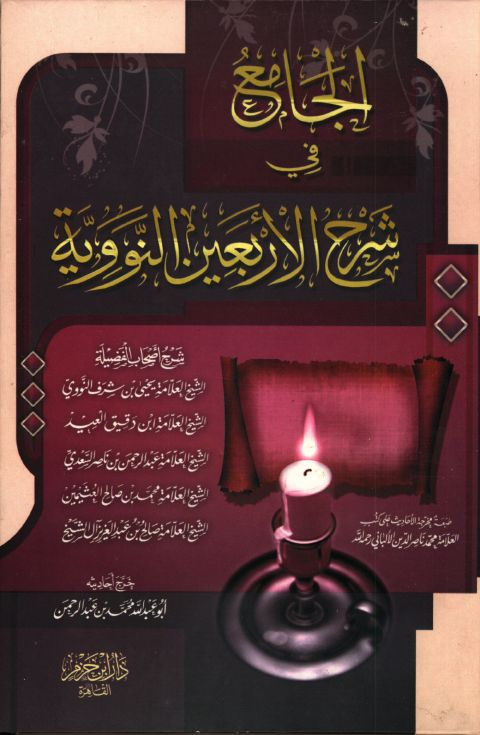

Downloads need an internet connection.
الجامع في شرح الأربعين النووية
Authors: محمد بن صالح العثيمين يحيى بن شرف النووي عبد الرحمن بن ناصر السعدي ابن دقيق العيد صالح بن عبد العزيز آل الشيخ
Editors: محمد بن عبد الرحمن
Publishers: دار ابن حزم بالقاهرة
**▫️ العنوان: الجامع في شرح الأربعين النووية** ▪️ المؤلف: #يحيى_بن_شرف_النووي • #ابن_دقيق_العيد • #عبد_الرحمن_السعدي • #محمد_صالح_العثيمين • #صالح_آل_الشيخ ▫️ المحقق: #محمد_بن_عبد_الرحمن ▪️ الناشر: #دار_ابن_حزم ▫️ تاريخ النشر: 1428هـ 2007م ▪️ بلد النشر: القاهرة، #مصر ▫️ الطبعة: 1 ▪️ عدد الأجزاء: 1 ▫️ الصفحات: 623 ▪️ نوع الوعاء: #كتاب ▫️ التصنيف الرئيسي: #الحديث_وعلومه ۪